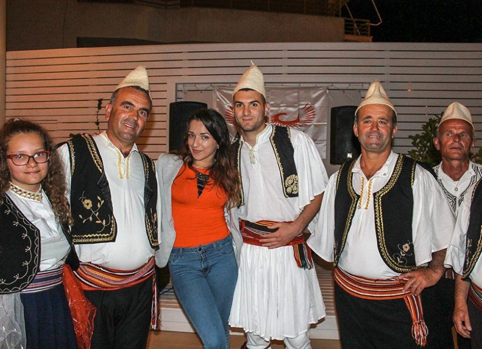

Народности
Численность населения — 2 831 741 (перепись 2011 года)[72], в то время как численность населения, по переписи 2001 года, составляла 3 069 275 человек: численность населения снизилась на 7,7 % в течение десяти лет. Основная причина снижения численности населения — крупномасштабная миграция и снижение рождаемости.
Постоянное население: 1 421 810 мужчин — 50,2 %, 1 409 931 женщина — 49,8 %[72].
Годовой прирост — 0,3 % (высокий уровень эмиграции из страны)[73].
Городское население — 53,7 % (данные на 2011 год[72]), сельское население — 46,3 %. Впервые в истории переписи (2011) населения в стране албанцев проживает в городах больше, чем в сельской местности.
Этнический состав: албанцы — 95 %, греки — 3 %, другие (румыны, цыгане, сербы, македонцы) — 2 %.
В апреле 1990 года прекратила своё существование еврейская диаспора в стране: последние 11 евреев отбыли в Израиль
Интересные факты
1)Это очень солнечная страна. Если точнее, то солнечных дней ежегодно тут примерно столько же, сколько в Испании — около 300.
2)Местная валюта — албанский лек. Причём слово «лек» — это сокращение от Александра Великого, как тут называют Александра Македонского.
3)Ахмет Зогу, президент Албании в первой половине 20-го века, за 9 лет пережил более 50 покушений. Однажды он сам в ответ открыл огонь по атаковавшим его заговорщикам, что его, судя по всему, и спасло.
4)Популярный албанский курорт Влёра омывается водами сразу двух морей, Ионического и Адриатического (интересные факты о морях).
5)Население Москвы вчетверо превышает население Албании по численности.
Климат
Средние температуры января — +8—9 °C, июля — +24—25 °C. Осадков — 800—2000 мм в год.
Климат прибрежной (западной) части страны — средиземноморский, переходящий к востоку в континентальный. Средняя температура июля на побережье — от +28 до +32° С, января — от +8 до +10° С. Высокие летние температуры на побережье переносятся легко из-за постоянно дующего средиземноморского бриза.
Туристический сезон продолжается с мая по сентябрь, но на воздухе комфортно находиться также в апреле и октябре. В году около 300 солнечных дней. Ранней весной и поздней осенью идут дожди. В горах Албании климат значительно более холодный — зимой температура может опускаться до −20° С.